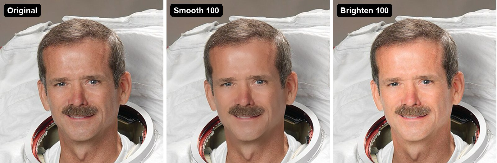
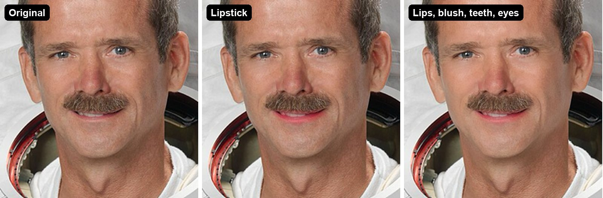
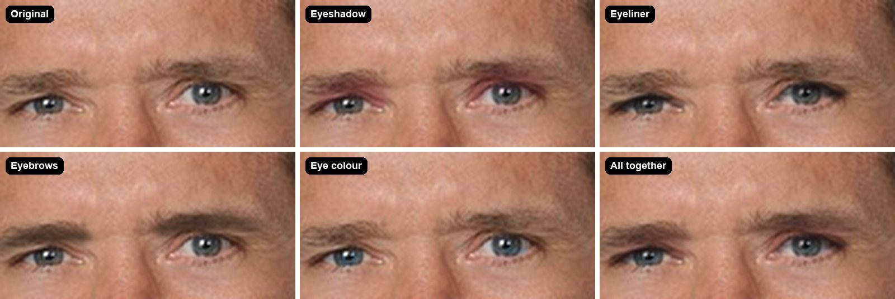
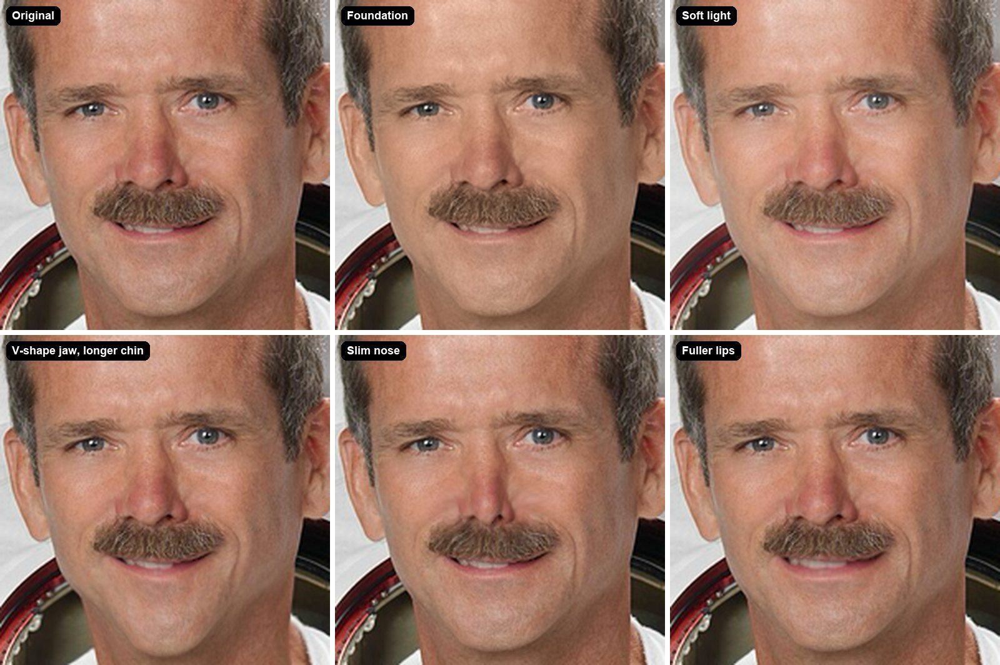
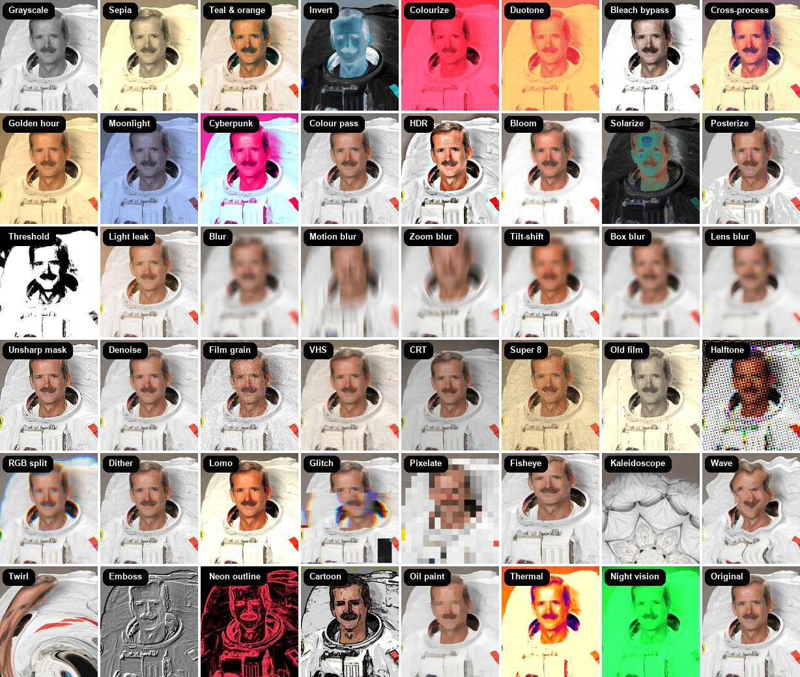
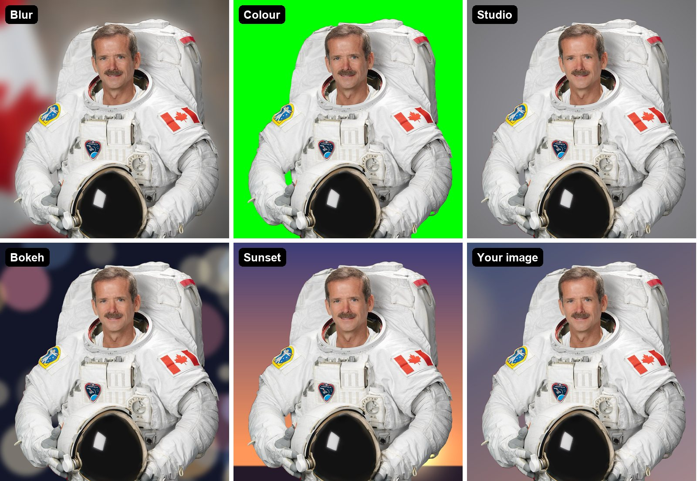
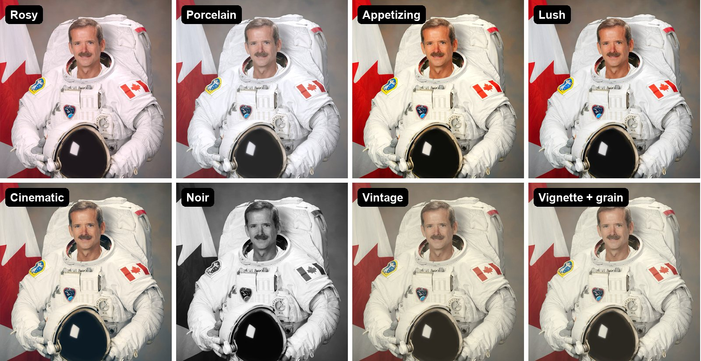

Polish for OBS
Free, open-source beauty, makeup and camera effects for OBS Studio on Windows, macOS and Linux, with no watermark

Overview
Streamers and people on video calls want the same camera touch-ups phone apps have: smoother skin, a little makeup, better colour, a blurred or replaced background. In OBS the usual answer is a paid plugin that stamps a watermark on your stream until you subscribe. Polish is a free, open-source OBS filter that does those effects on your own computer, with no account, no upload and no watermark, on Windows, macOS and Linux.
It adds one filter to any video source. The filter finds the face and the person in each frame, on its own thread, and applies every effect as a GPU shader in OBS's own effect language, which OBS runs on Direct3D 11, OpenGL or Metal. On Windows and Linux the face analysis is Google's MediaPipe face detection, face mesh and selfie segmentation models running on ONNX Runtime; on macOS it is Apple's Vision framework, which ships with the system. Nothing is downloaded at run time: the models ship inside the plugin, and the looks, stickers and backdrops are generated by a script in the repository.
The source code is on GitHub at TYFSADIK/obs-polish, under the MIT licence. Releases have five packages: Windows x64 and ARM64, macOS (Apple silicon and Intel in one), and Linux x86_64 and ARM64. One build of each loads in OBS 30, 31, 32 and 33.
What It Does
| Group | Controls | How |
|---|---|---|
| Beauty | Smooth skin, brighten skin, foundation in a shade you pick, soft light, sharpen | An edge-preserving filter limited to skin inside each tracked face; a brightness curve that keeps skin's own colour; foundation takes colour from the filtered skin around each pixel, so blotches fade and light and shade stay; soft light screens a blurred copy over the picture |
| Face shape | Slim face, V-shape jaw, chin length, slim nose, bigger eyes, fuller lips | A displacement field from nine jaw and chin landmarks, a squeeze across the nose, and soft zooms on the eyes and lips |
| Makeup | Lipstick, blush, eyeshadow, eyeliner, eyebrows and eye colour, each in any colour; whiter teeth, brighter eyes | Masks drawn from the landmarks: lips and mouth; brows, lid, lash line and iris. The iris is found from the darkest part of each eye, and its reflections are left white |
| Colour | 17 looks in Portrait, Food, Landscape and Modern groups, with a strength slider; exposure, contrast, warmth, saturation, a vignette that darkens or lightens, film grain | A 64-step 3D lookup table per look |
| Effects | 47, each with a strength: colour (grayscale, sepia, duotone, colour pass and more), light (HDR, bloom, light leak), blur (motion, zoom, tilt-shift, bokeh), retro (VHS, CRT, Super 8, halftone) and stylize (glitch, pixelate, fisheye, kaleidoscope, thermal, night vision, echo trails) | GPU shaders run after every other pass, so stickers take the effect too; an effect at 0 costs nothing |
| Background | Blur, solid colour, four built-in backdrops (Studio, Gradient, Bokeh lights, Sunset), your own image, edge softness | The person mask (Vision or MediaPipe) composited on the GPU; blur from a chain of half-size steps |
| Stickers | 10: sunglasses, star glasses, crown, flower crown, cat ears, bunny ears, devil horns, halo, hearts, party hat | Placed from the eyes and rotated with the head |
| Compare | A checkbox, and a hotkey you hold | Shows the untouched input, exactly |
| Platforms | Windows x64 and ARM64, macOS (Apple silicon and Intel), Linux x86_64 and ARM64; OBS 30 to 33 | One-step installer in each package; Linux also installs into the Flatpak OBS |
| Setup | Tools menu entry, 8 languages | Adds the filter to the selected source or the first camera and opens its settings |








How It Works
OBS gives a filter its source as a texture once per frame. Polish captures it, then runs only the passes that are switched on, each into an off-screen texture that feeds the next. With everything off, the output is the input pixel for pixel.
Reading a full frame back from the GPU would stall rendering, so the filter draws a 384-pixel-wide copy into a staging surface and reads it on the next frame, by which time the copy is finished. A worker thread analyses it. If the worker is still busy, that frame is skipped; the effects keep using the most recent result, which is also smoothed over time so landmarks do not jitter. The worker hands back the same description of each face (eyes, jaw line, nose, lip outlines, roll) and a person mask whichever backend produced it, so every effect is written once.
| Windows, Linux | macOS | |
|---|---|---|
| Faces | MediaPipe face detection finds faces; the 468-point face mesh then tracks each one from its own landmarks, and detection runs again only when a face is lost or every 15 frames | Vision face landmarks |
| Person mask | MediaPipe selfie segmentation, 256 by 256 | Vision person segmentation |
| Runs on | ONNX Runtime on the CPU: about 2 to 10 ms a frame for faces in the tests | the Neural Engine and GPU: about 8 ms for faces |
| Graphics | Direct3D 11 (Windows), OpenGL (Linux) | OpenGL or Metal |
Build Process, Step by Step
OBS refuses to load a plugin built against a newer libobs than itself, so one build that works in OBS 30 to 33 has to be compiled against libobs 30.0. The build fetches those headers with a sparse checkout, plus SIMDe, which libobs's maths headers need on ARM, and uses only functions that libobs 30 has. Images are decoded with stb_image rather than libobs's image API, which changed in OBS 33. On macOS and Linux, libobs symbols resolve against the running OBS; on Windows, where a DLL must link to an import library that OBS does not ship, CI makes obs.lib from the official release's obs.dll. The frontend API (the Tools menu, saving the hotkey) is looked up at run time, so the same binary also loads where there is no OBS window.
Before writing any effect, I wrote render-test: a small program that starts the libobs from /Applications/OBS.app with no window, loads OBS's image source and the plugin, runs a picture through the filter for a number of frames, and writes the result as a PNG. It can also ask the filter for its analysis state as JSON. Every change after that was checked by looking at real OBS output, not by reasoning about shaders.
On macOS, Vision's face landmarks request returns the face contour, eyes, nose and roll. I store the eyes by their position in the image rather than Vision's left and right, resample the jaw to 17 evenly spaced points so every face has the same shape, and blend each new result with the previous one. On the test portrait it finds the face in about 8 ms per frame.
Windows and Linux have no Vision, so the second backend runs Google's MediaPipe models on ONNX Runtime. I converted the face detection and face mesh models from Google's official files with tf2onnx and checked each against the original on the test portrait and on random inputs: they agree to about one part in a million. Google's selfie segmentation uses a MediaPipe-only operator that no converter handles, so that one is onnx-community's ONNX version of the same model, pinned by its checksum. The C code decodes the detector's 896 anchors, crops each face upright for the mesh, maps 468 landmarks to the jaw, eyes and lips the effects use, and tracks each face from its own landmarks between detections. ONNX Runtime is loaded at run time from a privately named copy next to the plugin, so it cannot clash with another plugin's copy.
if (o->ntrack == 0 || o->frame % DETECT_EVERY == 0) /* look for new faces */
nd = detect(o, img, w, h, stride, d, PA_MAX_FACES);
mesh(o, img, w, h, stride, &o->track[i], lx, ly); /* 468 landmarks per face */
o->track[kept++] = roi_from_landmarks(lx, ly); /* next frame's crop */The smoothing pass samples three rings of eight pixels around each pixel and weights each sample by distance and by how similar its colour is, so the eyes, brows and the edge of the face stay sharp while skin texture softens. It only acts where a pixel looks like skin (a soft range in YCbCr) and lies inside an ellipse fitted to the tracked face, and it always keeps a little of the original texture so skin never looks like plastic.
float region = skin_prob(c.rgb) * face_weight(uv);
// 3 rings x 8 samples, weighted by distance and colour difference
float wr = exp(-dot(d, d) / 0.0072);
float3 outc = lerp(c.rgb, smoothed, smooth_amt * region * 0.82);The first version lifted every channel toward white, and at high settings skin went grey and flat. The fix was to raise luminance along a soft curve and scale the colour by the same ratio, so the balance between red, green and blue, and with it the skin tone, stays put. The test checks it: luminance rises by about 28 levels at full strength while the red-to-blue ratio moves by 0.01.
Six jaw landmarks each carry a small push toward the middle of the face, mostly sideways so the jaw narrows instead of lifting. The shader computes, for every pixel, the falloff-weighted average of the nearby pushes and samples the image from that offset. Eyes get a local zoom inside a radius set from their measured size.
float2 d = w0 * ctl0.zw + w1 * ctl1.zw + ... + w5 * ctl5.zw;
return pos - d / max(w0 + w1 + w2 + w3 + w4 + w5, 1.0); // an average, never a sumLip colour needs the shape of the lips, not an ellipse. When lipstick or teeth whitening is on, the analyzer draws the outer and inner lip outlines (from Vision or the face mesh) into a small two-channel mask with an even-odd scanline fill: the lips (outer minus inner, so an open mouth stays uncoloured) and the mouth interior. Lipstick blends the chosen colour in soft light, which keeps the lips' own light and shade. Teeth whitening acts only on bright, unsaturated pixels inside the mouth, so the tongue and gums are left alone. Blush is a soft ellipse on each cheek, placed between the eye and the jaw, multiplied into skin so the texture shows through.
fill_polygon(mask, w, h, f->lip_outer, n, 2, 0); /* outer, then inner: */
fill_polygon(mask, w, h, f->lip_inner, n, 2, 0); /* even-odd leaves the opening empty */
float3 tinted = soft_light(rgb, lip_color.rgb);
rgb = lerp(rgb, tinted, mask.r * lip_amount);The person mask (384 by 512 from Vision, 256 by 256 from MediaPipe) is uploaded as a texture whenever a new one arrives and composited with an adjustable soft edge. The blur halves the picture two to six times and grows it back with bilinear filtering, a "dual filter" blur: it uses only OBS's own drawing, so it looks the same on Direct3D, OpenGL and Metal, and even a heavy blur costs little.
Each look is a 512 by 512 lookup table (64 tiles of 64 by 64) produced by a Python script from simple operations: white balance, saturation, an S-curve, split toning, and for Lush a boost limited to greens and blues so skin is left alone. They are grouped the way camera apps group them: Portrait, Food, Landscape and Modern. The stickers and the four backdrops are drawn by the same script. Nothing in the repository is third-party art, which keeps the licence simple.
A Tools menu entry adds the filter to the selected source, or to the first camera in the scene, and opens its settings. A hotkey you hold shows the original on every Polish filter at once, and its binding is saved with the scene collection. Labels are translated into English, French, Spanish, German, Portuguese, Chinese, Japanese and Korean, and follow OBS's language setting.
Every push builds all five packages on GitHub's macOS, Windows (x64 and ARM64) and Linux (x86_64 and ARM64) machines, then installs each into a real OBS on that platform and runs the 29 checks: the official OBS 33 on Windows with Direct3D 11, the OBS Project's newest build and Ubuntu's own OBS 30 on Linux under Xvfb, and OBS 33 on macOS with OpenGL and Metal and both face backends. A tag publishes the packages with their checksums. Linux builds on Ubuntu 22.04, so they also run on newer distributions and in the Flatpak OBS.
Testing
The test suite renders a public-domain NASA portrait (Chris Hadfield) through the filter inside a real libobs and checks the pixels against what OBS shows without the filter. All 29 checks pass on every platform:
| Platform | OBS | Graphics | Result |
|---|---|---|---|
| Windows x64 | 33.0.3, official release | Direct3D 11 | 29 of 29 |
| Windows ARM64 | 33.0.3, official release | Direct3D 11 | 29 of 29 |
| Linux x86_64 | 32.2, OBS Project PPA | OpenGL (Mesa) | 29 of 29 |
| Linux ARM64 | 30.0.2, Ubuntu's package | OpenGL (Mesa) | 29 of 29 |
| macOS, Vision | 33.0.3 | OpenGL and Metal | 29 of 29 each |
| macOS, ONNX | 33.0.3 | OpenGL and Metal | 29 of 29 each |
| Check | Result |
|---|---|
| Every effect off | Output identical to the input, pixel for pixel |
| Face tracking | 1 face, eyes level and above the chin |
| Smoothing | Forehead detail 4.41 to 2.33; background untouched |
| Brightening | Luminance up 28 levels; red to blue ratio 1.63 to 1.64 |
| Face shape | Only pixels near the face change |
| Background blur | Detail behind the subject halved; the face unchanged |
| Solid colour | The background patch comes out pure green |
| Identity look | Within 1 level of the input |
| Mono look | No colour left |
| Sticker | Drawn above the eyes |
| Lipstick | Only pixels around the mouth change, and they get redder |
| Vignette | Corners darker by 48 levels, centre unchanged |
| Built-in backdrop | Background replaced, face unchanged |
| Compare | What OBS shows without the filter, with every effect on |
| Stacked effects | Smoothing, face shape, blush and vignette together: a real picture, corners darker, the face changed by about 11 levels |
| Foundation | Cheek colour spread 6.1 to 5.0; background untouched |
| Soft light | Picture 11 levels brighter, the face 20 |
| V-shape jaw and chin | Only the lower face changes |
| Slim nose, fuller lips | Changes centred on the nose and on the mouth |
| Eyeshadow, eyeliner, eyebrows | Above the eyes, on the lash line and on the brows; liner and brows darker by 20 to 26 levels |
| Eye colour | Every changed pixel inside an iris, and the iris takes the new colour |
| Effects | All 47 render and change the picture; grayscale, invert, threshold, posterize, pixelate, mirror, blur, unsharp mask, outline, night vision and echo each meet an exact property |
Testing found real bugs. The face-shape warp tore the lower face apart: the six control points overlap, and applying their pushes one after another added them up, so a 4-pixel setting moved the chin about 20 pixels. Plotting the landmarks on the photo showed they were right, logging the shader's inputs showed they were right too, and the fix was to average the pushes instead of chaining them. The first contact sheet of looks and stickers showed no effect at all, which turned out to be renders from before the assets existed; the identity-look test had passed anyway, because an identity look changes nothing, which is why the suite now also checks that Mono removes colour. The first smoothing check failed because it measured the whole face box, where eyes and moustache are edges the filter is meant to keep; it now measures forehead skin. The first CI run never started because GitHub had retired the macOS runner image it named. And while adding the new stickers, a fix to the bunny ears did not show up: the build copied the assets into the plugin only when the code was relinked, so a change to an image alone left the old one in place. The copy is now a build step that always runs.
Taking it to Windows and Linux found more, each only on some platforms:
- 0.1.0 and 0.2.0 only loaded in OBS 33. They were built against OBS 33's headers, which older OBS rejects, and used an image API that OBS 33 introduced. Building against libobs 30 and decoding images with stb_image fixed both, and Ubuntu's OBS 30 in CI now proves it.
- Background colour and blur were black on Windows. OBS's Direct3D 11 backend drops a draw when a shader uses a value that was never set, and those modes never set the backdrop image's placement; OpenGL does not mind. Every shader value now starts at zero when the effect loads. Blur stayed black for a second reason: the custom blur shader rendered nothing on Direct3D at all. Rendering variants in CI (downscale only, blur only) isolated it, and the blur was rebuilt from OBS's own drawing.
- Metal crashed with no look selected. Metal stops on an unbound texture, which OpenGL and Direct3D allow; the colour pass now always binds one.
- CI's macOS virtual machine draws pictures slightly differently. Its OpenGL, translated to Metal, renders the plain image up to 13 levels away from the file. The checks now compare against what OBS shows without the filter, measure the GPU's own run-to-run difference, and the filter steps aside entirely when nothing is on, so "unchanged" means unchanged.
- A crash in the lip outline: resampling wrote one point past the end of the array and corrupted the count after it.
- The ONNX Runtime GitHub repository no longer existed, so the build takes Microsoft's official NuGet package, pinned by its checksum.
Challenges and Lessons Learned
Build the harness first. A shader that compiles can still be wrong in ways no one would guess from the code. Rendering inside the real libobs and looking at the output caught every bug on this page.
A test that cannot fail proves nothing. The identity look passed while looks were not being applied at all. Pairing it with a test that must change the image (Mono) closed the gap.
Never wait for the GPU. Reading the analysis copy back one frame late, and dropping frames when Vision is busy, keeps the filter's cost to the shaders alone.
Use what the platform ships, and keep the rest portable. Apple's Vision framework needs no model files on macOS. Putting it behind a small backend interface meant the Windows and Linux version was one new file for face analysis; every effect, shader and test stayed the same.
Test effects together, not only one at a time. Every check in 0.3.0 switched one effect on and everything else off, so each effect always ran first. Version 0.4.0's work turned up what that hid: libobs clears an effect's values after every pass, the frame size was only set before the first, and slim face with smoothing on (the default) sampled one pixel for the whole frame. Every pass now sets what it reads, and a check stacks effects the way people use them.
Test where the users are. Each graphics backend failed in its own way: Direct3D on unset values and one shader, Metal on an unbound texture, a virtual GPU on rounding. None showed up on the machine the plugin was written on. Running the same pixel checks inside the real OBS on every platform is what found them.
Limits
- Face analysis on Windows and Linux runs on the CPU. It takes 2 to 10 ms a frame in the tests, on its own thread, so it never holds up a frame; a GPU path would free the CPU further.
- The mask is slightly behind. The person mask is one or two frames older than the picture, so fast movement can show a thin edge.
- One face for shape and stickers. Face shape, blush, eye brightening and stickers follow the largest face; smoothing, foundation, lipstick and eye makeup cover up to two.
- Eye makeup is drawn at analysis size. The eye mask is made on the 384 px copy, so on a face that is small in the frame, eyeliner is soft rather than crisp.
- Moustaches hide lips. A full moustache can hide part of the upper lip from the lip landmarks, so lipstick only reaches what the model can see.
- Intel Macs: the macOS package includes Intel code, but CI has only Apple silicon machines, so it has not been run on an Intel Mac.
What Is Next
- GPU inference for the face models on Windows and Linux (DirectML, CUDA)
- Eye makeup masks drawn at full resolution, for a crisper liner on small faces
- Importing your own looks as .cube files and your own stickers as PNGs
- Temporal smoothing of the person mask to remove the edge lag
Cite This Page
Citation formats
Plain text
Taki Sadik, "Polish for OBS", TYFSADIK, https://tyfsadik.org/work/applications/obs-polish (accessed 2026-11-25).BibTeX
@misc{sadik-obs-polish,
author = {Sadik, MD. Taki Yasir Faraji},
title = {Polish for OBS},
year = {2026},
url = {https://tyfsadik.org/work/applications/obs-polish},
urldate = {2026-11-25}
}APA
Sadik, M. T. Y. F. (2026). Polish for OBS. TYFSADIK. https://tyfsadik.org/work/applications/obs-polish